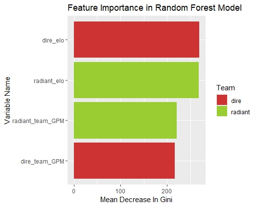
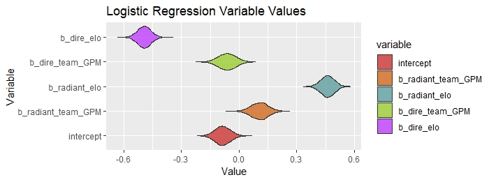
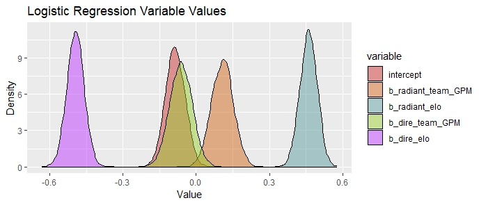

Making and Testing
the Models
Model Selection
Before discussing the models I ended up using, it is crucial to discuss the rationale behind the model selection process. Several machine learning algorithms were considered, including logistic regression, random forests, k-nearest neighbors, support vector machines, naive bayes, and extreme gradient boosting. After careful evaluation and experimentation, two primary models were chosen: random forest and Stan's Bayesian logistic regression. Logistic regression was chosen for its ability to clearly identify pertinent features, and EDA revealed that the features met the assumptions. Logistic regression aided the feature selection process for the other models. Random forest was selected for its impressive out-of-sample testing accuracy when compared to other models. 
Feature Selection
Selecting appropriate features is crucial for building effective predictive models. In this project, a combination of domain knowledge and data exploration techniques, such as stepwise feature implementation, guided the feature selection process. The following features were included in the models:
- Radiant Team GPM: The average Gold Per Minute (GPM) of the Radiant team.
- Radiant Elo: The Elo rating of the Radiant team, representing their skill level.
- Dire Team GPM: The average GPM of the Dire team.
- Dire Elo: The Elo rating of the Dire team.
 Interestingly, features that were initially expected to be useful, such as Experience Per Minute (XPM), the range of GPM for each team, and the division of tournament, turned out to confuse the models.
In fact, in the logistic regression model, these features had the opposite effect, with an increase in XPM leading to a slight decrease in win probability.
After experimenting with many features, these four were chosen as they consistantly created models with better AUC/ROC and out-of-sample-accuracy than any other feature combination.
Interestingly, features that were initially expected to be useful, such as Experience Per Minute (XPM), the range of GPM for each team, and the division of tournament, turned out to confuse the models.
In fact, in the logistic regression model, these features had the opposite effect, with an increase in XPM leading to a slight decrease in win probability.
After experimenting with many features, these four were chosen as they consistantly created models with better AUC/ROC and out-of-sample-accuracy than any other feature combination.
Model Comparisons and Insights
The violin plot displayed above illustrates the variables included in the logistic regression output along with the corresponding density of each variable's simulation. Since the model was predicting whether or not the radiant team would win, positive variable values refer to an increase in the likelihood that radiant would win, and negative values refer to the opposite (that is, negative values show the variable favors the dire side). Insights from the various models will be discussed below.
- Negative Intercept
- The negative intercept would lead us to believe that dire wins more often than radiant. Dotabuff corroborates this theory by showing that, across the hundres of thousands of professional matches ever played, dire side wins about 62.67% of the time. I guess you'd better hope that your favorite professional team is dire side! Interestingly, in non-professional dota, radiant is slightly favored. 
- The importance of Elo
- Elo could be considered as a rough measure of the skill of a team, including soft skills like communication, problem-solving, and leadership, among other things. Elo turned out to be the most important factor in deciding if a team would win, across all skill levels. Since elo is only an amalgamation of the effect of soft skills of a team, I think that measuring these soft skills more closely would produce a model far more accurate and insightful than mine when predicting game outcome.
-
GPM vs. XPM
-
Interestingly, the XPM of a team often yielded a negative coefficient: an increase in XPM lead to a decrease in win probability across all divisions.

- The GPM of the position 1 player, the GPM of the position 5 player, and the range between the two were all terrible predictors, showing the importance of team success as opposed to individual success. This also came as a surprise because the GPM of position 1 players is paramount in my games: it seems like if the carry gets an early gold advantage, the other team has no chance of winning. However, the models would suggest that the wealth of the team is more important than that of the carry.
-
Interestingly, the XPM of a team often yielded a negative coefficient: an increase in XPM lead to a decrease in win probability across all divisions.
Results
To avoid data leakage, the model's accuracy was evaluated using out-of-sample games from the prestigious Bali Major, a DPC tournament in Indonesia with a $500,000 prize pool.
These games were not included in the Elo calculations, ensuring the model's performance on unseen data.
This approach provided a reliable evaluation, mitigating bias from using Elo values derived from training games.
Considering the Bali Major's substantial prize pool and its impact on qualification for The International (TI), evaluating out-of-sample games further mitigated bias from teams not exerting full effort.
This ensured a robust assessment of the model's accuracy in predicting outcomes in competitive Dota 2 events.

In the end, the random forest model emerged as the most accurate among the different models evaluated. It successfully predicted the outcomes of 66.50% of the games at the Bali Major, including correctly identifying the winning team. Looking ahead, there is potential for further improvement by incorporating additional features that capture the nuanced "soft skills" exhibited by teams. I'm confident this would provide a more comprehensive understanding of the factors influencing game outcomes and enhance the predictive power of the model.